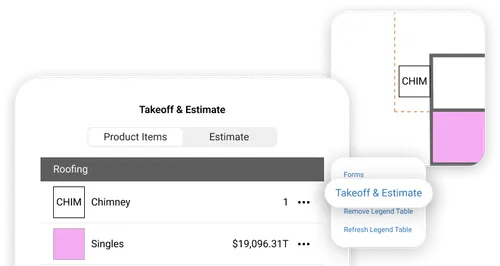

ArcSite 上手几天：终于有人把工地画图和算料这件事做顺了
以前在 iPad 上装过好几个移动 CAD，要么画一半崩了要么导出 DWG 丢元素。ArcSite 不一样——画图就是算料，画完直接出方案还能电子签。
我为什么会去装它
我是个装修包工头，手下带三个组，平时最头疼的事不是跟客户砍价，而是现场量尺画图和后面算料对不上。
以前的流程是这样的：到现场用卷尺和激光仪量一圈，记在本子上，回办公室开 CAD 画一遍，再开算料软件把数字重新敲进去——两遍输入、两份文件，周末加班对不上是常态。上个月刚因为 BOM 里少算了两根围栏柱赔了客户一千多块，老婆问我能不能用个新工具试试，别再跟自己较劲。
朋友推荐说"试试 ArcSite，它的官网上写着安卓端也能用，画完直接出清单"。说实话我没抱太大期望，移动 CAD 我装过好几个了——有的画到一半闪退，有的导出 DWG 丢图元，有的算料模块还要单独加钱买。但想着反正免费试用，就从下载拿了个安装包装上了。
初印象：界面干净，但我花了十分钟才找到怎么开项目
打开 ArcSite 的第一眼界面挺干净——左侧项目列表，右侧是画布区域，底部工具栏一排形状和标注工具，颜色用的是深灰色系，不会像某些设计软件那样晃眼睛。但说实话，我花了快十分钟才搞明白怎么新建一个项目——主界面上只有"继续编辑"和"最近项目"，新建按钮藏在右上角一个小"+"图标里，不太显眼。
建完项目之后发现还有个小插曲：ArcSite 默认给的画布是字母纸比例，但工地现场通常用英制单位（英尺英寸），我捣鼓了一阵才在项目设置里找到单位切换。这种细节上的"设计洁癖"——不帮你按场景自动匹配、让用户自己找设置——后面我还遇到过几次，不算大问题但第一次用会有点烦。
用下来最爽的一个功能：画完柱子，清单里立刻就有了
第一天去现场试的时候，我按朋友说的先画了一段围栏——画根立柱、画根横梁、阵列排个 16 根。然后我习惯性地想："好了，现在去算料软件里敲一遍数字"，然后突然反应过来不对——打开右侧面板看 BOM，里面已经整整齐齐列着一行"6 英尺镀锌钢柱 × 16"，连单价都跟我之前在产品库里设的一模一样。
说实话我当时愣了三秒。之前听人说"绘图就是算料"，以为是营销噱头，没想到是真的——我画的每一个形状，从它落下去的那一刻起就跟产品库绑定了，阵列工具一拖十六个，清单瞬间就变十六个。那天我故意手贱改了一下间距，从 6 英尺改成 5 英尺，BOM 里的柱数量瞬间从 16 变成 20——连刷新按钮都不用点。
这个"事件驱动"的设计让我最吃惊——它不是每隔几秒扫一遍画布再更新，而是我每一个操作都直接触发 BOM 变化。删掉一排阵列，那一排的所有产品瞬间消失；改房间尺寸，面积和对应的地板砖数量立刻重算。我后来在想，这玩意儿背后的技术实现应该挺重的，但用起来就是一句话：你只管画，算料它自己来。

不太爽的地方：AR 扫描准不准全看手机摄像头
我用的是华为 Mate 系列，有 LiDAR 传感器，本来以为 AR 扫描应该挺准的。结果第一次扫一个客厅，画出来的平面图比例是对的，但缺了一面墙——反复扫了三次才补上。翻了它的ArcSite文档才知道，极暗和强逆光场景下 ArcSite 会丢墙，扫的时候要注意光照，而且离墙要在一到三米之间，太近太远都不准。
还有个小毛病：扫完之后门洞的位置有时候会歪个几厘米，得手动微调删掉识别错的墙、补画漏的门洞。这不算 ArcSite 独有的问题，市面上所有 AR 扫描都这样——但我还是希望它能再聪明一点。
出方案那一下，客户眼睛亮了
画完图、清单自动生成、成本估算一路算上去——利润率 25%、销售税自动按我选的地区算、人工费按工时加。然后我点了个"生成方案"按钮，出来的不是一堆干巴巴的数字，是一个结构化的客户文档：物料清单分了类、屋顶工程的总价单独标出来、上面有 ArcSite 的品牌水印，还有电子签名入口。
我给老婆看了一眼，她说："这不就是以前我们找设计师出方案要收两千块那个东西？"真的，同样的活儿，以前要设计师做两天、收两千块，现在我自己在工地用 ArcSite 画完，一个方案出来了。签完字还能直接在 ArcSite 里追客户看没看、签没签、款收到没收到——整个流程在一个 App 里闭环了。

适合谁 / 不适合谁
适合谁我觉得很明确：现场承包商、装修包工头、太阳能安装队——就是那种整天在工地转、手里拿个激光仪和卷尺、需要快速画图算料出方案的人。ArcSite 把他们原来要开三个软件做的事整合到一个安卓端 App 里，而且画图就是算料这个核心逻辑真的省时间。
不太适合的人？如果你是坐办公室的结构设计师、画的都是那种需要复杂 BIM 建模的图纸，ArcSite 肯定满足不了——它定位就是现场作业的轻量级工具，复杂建模不是它的菜。还有就是如果你只用免费档，那基本只能画图，算料和 CRM 集成都要钱，考虑清楚再上手。
一个小插曲：离线场景真的能用
上周去一个郊区的工地，那边完全没信号。我本来以为 ArcSite 肯定用不了，结果发现它所有的绘图功能都是本地跑的——离线照样能画、能算料。等出了工地有信号了，打开 ArcSite 它自动同步了。这个细节我是从帮助文档的故障排查里看到的，刚好用上了。
说实话我对 ArcSite 的第一印象不算好——界面藏得深、AR 扫不准、单位切换不自动。但用了几天之后，绘图就是算料这一个核心理由就把这些小毛病盖过去了。以前要开 CAD 画一遍、算料软件敲一遍、导出 PDF 给设计师出方案，现在在安卓手机上打开 ArcSite，画完图 BOM 自动出来，点几下按钮方案就发出去了，客户直接在手机上签。
如果你是那种经常在现场干活的承包商，真的可以试试——我以前不信移动 CAD 能干活，现在出门包里除了卷尺激光仪，多了一台装着 ArcSite 的平板。
ArcSite 的资料我习惯在几个常用仓库里留着备份——GitHub上更新最勤，Gitee国内访问快，GitCode有时候应急也能捞到资源。克隆下来就能看到完整的安卓版文档、图纸模板和产品库示例。